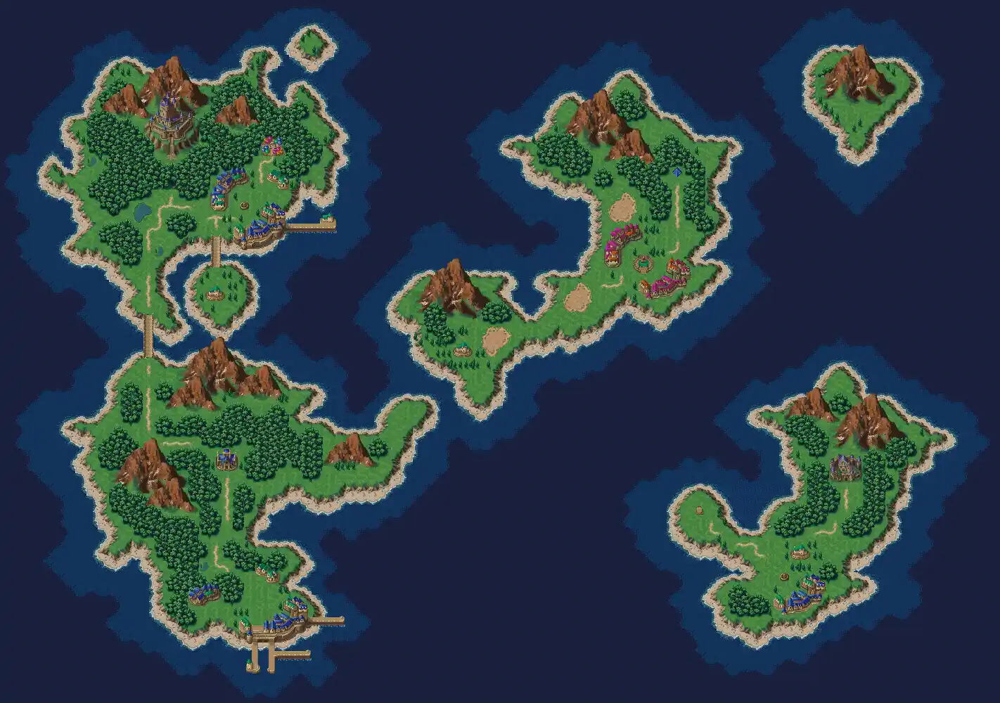

The Epic Journey Through Time
Chrono Trigger follows the story of Crono, a young adventurer who accidentally travels through time during the Millennial Fair. Alongside his friends Marle and Lucca, Crono discovers a looming threat: Lavos, a parasitic creature that will destroy the world in the future. To prevent this catastrophe, the group embarks on an epic journey across different eras, from the prehistoric past to the distant future. They meet allies like Frog, a knight cursed to live as an amphibian, and Magus, a mysterious sorcerer with his own agenda. Together, they must unravel the secrets of time, alter history, and confront Lavos to save the planet.
Explore the World of Chrono Trigger
